from tkinter import *
def draw(canvas, width, height):
pass # replace with your drawing code!
def runDrawing(width=300, height=300):
root = Tk()
canvas = Canvas(root, width=width, height=height)
canvas.pack()
draw(canvas, width, height)
root.mainloop()
print("bye!")
runDrawing(400, 200)
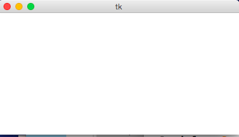
def draw(canvas, width, height):
canvas.create_rectangle(0,0,150,150, fill="yellow")
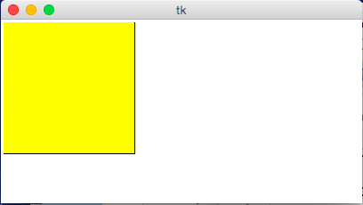
def draw(canvas, width, height):
canvas.create_rectangle( 0, 0, 150, 150, fill="yellow")
canvas.create_rectangle(100, 50, 250, 100, fill="orange", width=5)
canvas.create_rectangle( 50, 100, 150, 200, fill="green",
outline="red", width=3)
canvas.create_rectangle(125, 25, 175, 190, fill="purple", width=0)
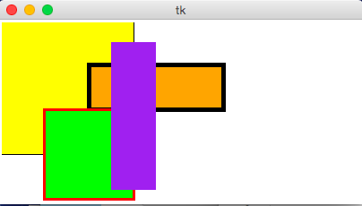
def draw(canvas, width, height):
margin = 10
# Approach #1: Add margin to top/left, subtract margin from bottom/right:
canvas.create_rectangle(margin, margin, width-margin, height-margin,
fill="darkGreen")
# Approach #2: add/subtract width/height from center (cx, cy)
(cx, cy) = (width/2, height/2)
(rectWidth, rectHeight) = (width/4, height/4)
canvas.create_rectangle(cx - rectWidth/2, cy - rectHeight/2,
cx + rectWidth/2, cy + rectHeight/2,
fill="orange")
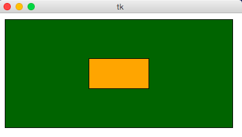
def rgbString(red, green, blue):
return "#%02x%02x%02x" % (red, green, blue)
def draw(canvas, width, height):
pistachio = rgbString(147, 197, 114)
maroon = rgbString(176, 48, 96)
canvas.create_rectangle(0, 0, width/2, height/2, fill=pistachio)
canvas.create_rectangle(width/2, height/2, width, height, fill=maroon)
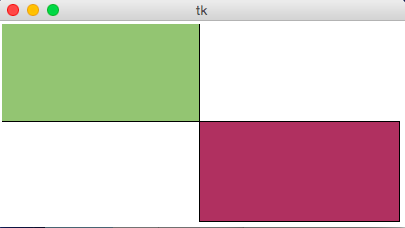
def draw(canvas, width, height):
canvas.create_oval(100, 50, 300, 150, fill="yellow")
canvas.create_polygon(100,30,200,50,300,30,200,10, fill="green")
canvas.create_line(100, 50, 300, 150, fill="red", width=5)
canvas.create_text(200, 100, text="Amazing!",
fill="purple", font="Helvetica 26 bold underline")
canvas.create_text(200, 100, text="Carpe Diem!", anchor=SW,
fill="darkBlue", font="Times 28 bold italic")
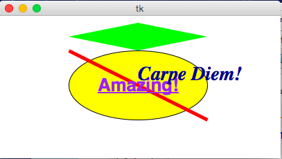
def drawBelgianFlag(canvas, x0, y0, x1, y1):
# draw a Belgian flag in the area bounded by (x0,y0) in
# the top-left and (x1,y1) in the bottom-right
width = (x1 - x0)
canvas.create_rectangle(x0, y0, x0+width/3, y1, fill="black", width=0)
canvas.create_rectangle(x0+width/3, y0, x0+width*2/3, y1,
fill="yellow", width=0)
canvas.create_rectangle(x0+width*2/3, y0, x1, y1, fill="red", width=0)
def draw(canvas, width, height):
# Draw a large Belgian flag
drawBelgianFlag(canvas, 25, 25, 175, 150)
# And draw a smaller one below it
drawBelgianFlag(canvas, 75, 160, 125, 200)
# Now let's have some fun and draw a whole grid of Belgian flags!
flagWidth = 30
flagHeight = 25
margin = 5
for row in range(4):
for col in range(6):
left = 200 + col * (flagWidth + margin)
top = 50 + row * (flagHeight + margin)
right = left + flagWidth
bottom = top + flagHeight
drawBelgianFlag(canvas, left, top, right, bottom)
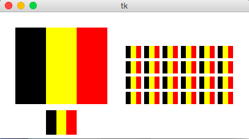
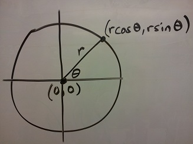
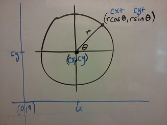
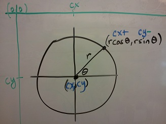
import math
def draw(canvas, width, height):
(cx, cy, r) = (width/2, height/2, min(width, height)/3)
canvas.create_oval(cx-r, cy-r, cx+r, cy+r, fill="yellow")
r *= 0.85 # make smaller so time labels lie inside clock face
for hour in range(12):
hourAngle = math.pi/2 - (2*math.pi)*(hour/12)
hourX = cx + r * math.cos(hourAngle)
hourY = cy - r * math.sin(hourAngle)
label = str(hour if (hour > 0) else 12)
canvas.create_text(hourX, hourY, text=label, font="Arial 16 bold")
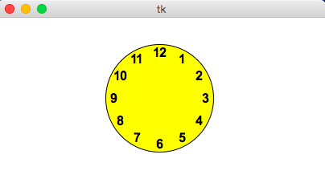
import math
def drawClock(canvas, x0, y0, x1, y1, hour, minute):
# draw a clock in the area bounded by (x0,y0) in
# the top-left and (x1,y1) in the bottom-right
# with the given time
# draw an outline rectangle
canvas.create_rectangle(x0, y0, x1, y1, outline="black", width=1)
# find relevant values for positioning clock
width = (x1 - x0)
height = (y1 - y0)
r = min(width, height)/2
cx = (x0 + x1)/2
cy = (y0 + y1)/2
# draw the clock face
canvas.create_oval(cx-r, cy-r, cx+r, cy+r, outline="black", width=2)
# adjust the hour to take the minutes into account
hour += minute/60.0
# find the hourAngle and draw the hour hand
# but we must adjust because 0 is vertical and
# it proceeds clockwise, not counter-clockwise!
hourAngle = math.pi/2 - 2*math.pi*hour/12
hourRadius = r*1/2
hourX = cx + hourRadius * math.cos(hourAngle)
hourY = cy - hourRadius * math.sin(hourAngle)
canvas.create_line(cx, cy, hourX, hourY, fill="black", width=1)
# repeat with the minuteAngle for the minuteHand
minuteAngle = math.pi/2 - 2*math.pi*minute/60
minuteRadius = r*9/10
minuteX = cx + minuteRadius * math.cos(minuteAngle)
minuteY = cy - minuteRadius * math.sin(minuteAngle)
canvas.create_line(cx, cy, minuteX, minuteY, fill="black", width=1)
def draw(canvas, width, height):
# Draw a large clock showing 2:30
drawClock(canvas, 25, 25, 175, 150, 2, 30)
# And draw a smaller one below it showing 7:45
drawClock(canvas, 75, 160, 125, 200, 7, 45)
# Now let's have some fun and draw a whole grid of clocks!
width = 40
height = 40
margin = 5
hour = 0
for row in range(3):
for col in range(4):
left = 200 + col * width + margin
top = 50 + row * height + margin
right = left + width - margin
bottom = top + height - margin
hour += 1
drawClock(canvas, left, top, right, bottom, hour, 0)
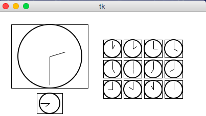